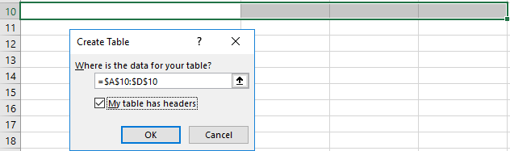

When creating a table from scratch, Excel allows you to define table headers.
This information is not communicated to most screen reader users.

Using Name Manager
Microsoft Excel has a built-in function called Name Manager that can be used to give names to a cell or range of cells.
Using a special naming convention, JAWS and NVDA can recognize table header rows and columns. Microsoft reports that Narrator also recognizes this coding.
Determine if table has column headers, row headers, or both column and row headers
Define regions as long as they begin with the string Title, ColumnTitle, or RowTitle.
Each name in a workbook no matter what sheet it is on must have a unique name.